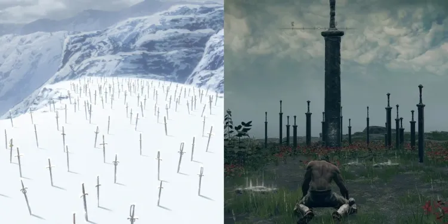

Berserk, por ser uma obra famosa, é referenceiada em várias outras obras, como por exemplo, os jogos da FromSofware.
A semelhança do olho vermelho com o Behelit Carmesim
A semelhança da classe prisioneiro de Elden Ring com o Griffith após ser torturado
A semelhança da icônica arma da FromSoft, Ultra Greatsword, com a Dragon Slayer
A recriação da colina de espadas, onde o bando do falcão foi enterrado